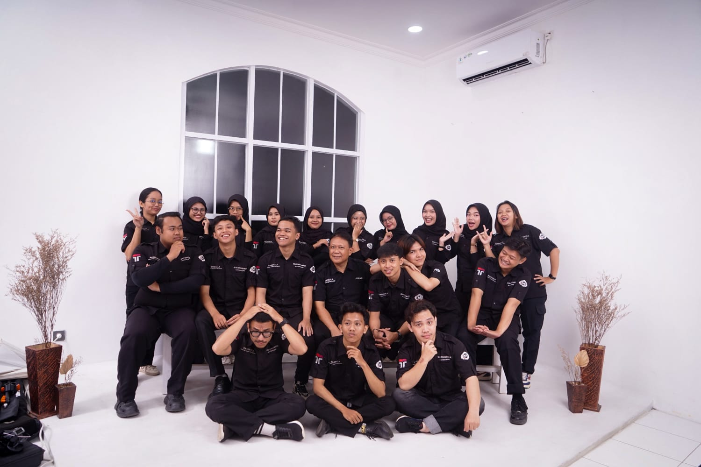
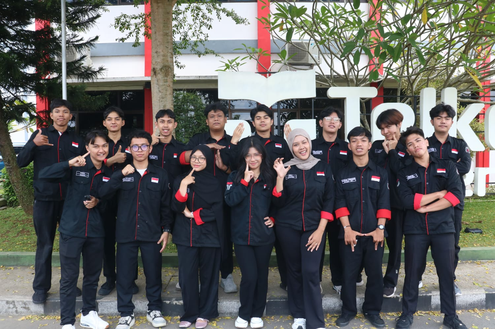
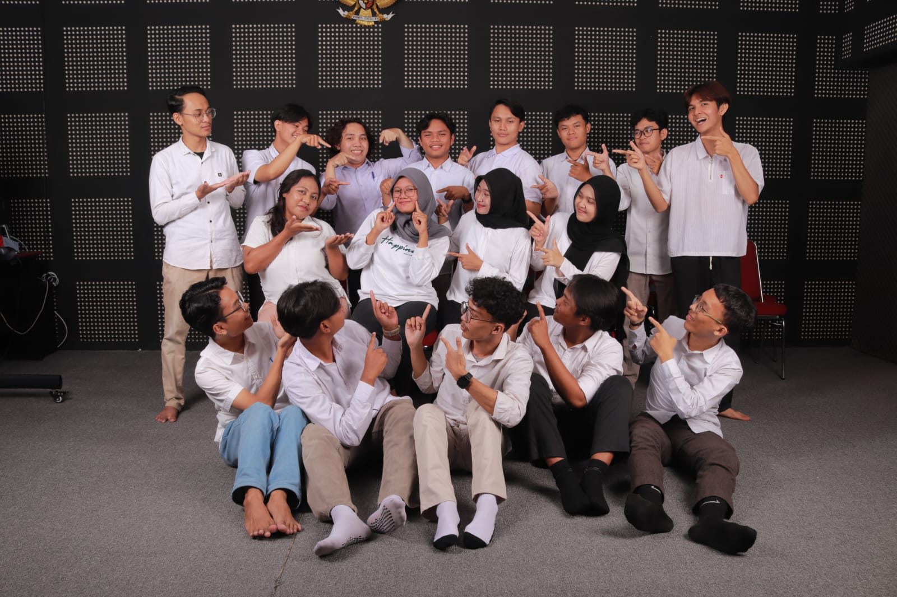
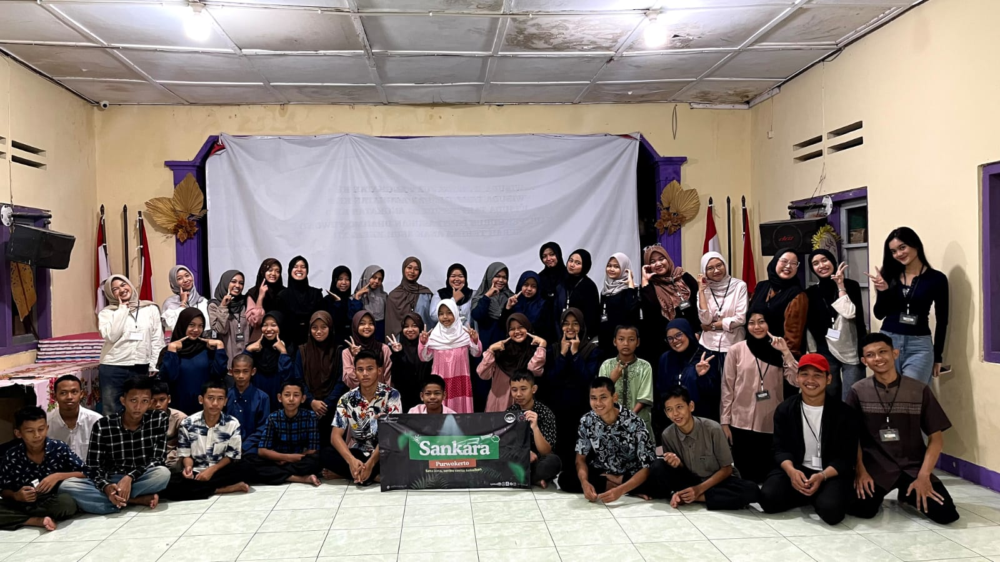

Leadership, organization, and contribution
Beberapa pengalaman yang membentuk cara saya bekerja, memimpin, berkolaborasi, dan berkembang secara bertahap di lingkungan akademik maupun organisasi.
Peran yang paling merepresentasikan tanggung jawab dan perkembangan saya.

Nov 2024 - Oct 2025
UKM Manggala
Telkom University Purwokerto

Des 2025 - Now
Himpunan Mahasiswa S1 Teknik Telekomunikasi
Telkom University Purwokerto

Jun 2025 - Now
Lab Electronics & Internet of Everything
Telkom University Purwokerto

Des 2025 - Now
NGO Sankara
Regional Purwokerto
Berbagai kepanitiaan dan kontribusi lain yang ikut membentuk pengalaman saya.
Jan 2025 - Now
RG Hexacomm
TUPNov 2025
Diksar
Manggala - TUPSep - Oct 2025
Open Recruitment
Manggala - TUPAgu - Sep 2025
SIMADU
Manggala - TUPMar 2025
Pelatihan SDR
Hexacomm - TUPFeb 2025
HexaNight
Hexacomm - TUPOct - Nov 2024
Open Class 2024
Manggala - TUPOct 2024
HMTT Peduli
HMTT - TUPMay 2024
Semarak Sinau Ceria
Manggala - TUPMar 2024
Manggala's SAUM
Manggala - TUPMar 2024
MAHEALTH
Manggala - TUPJan - Feb 2024
LDK Manggala
Manggala - TUPJan 2024
Dialog Prodi 2024
HMTT - TUPOct 2023
Malam Sanggar Seni
BEM - TUPJan 2026
Upgrading HIMA
HMTT - TUP